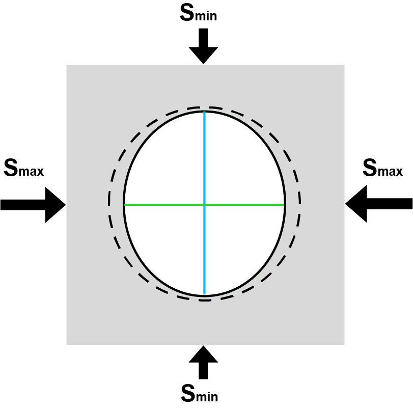
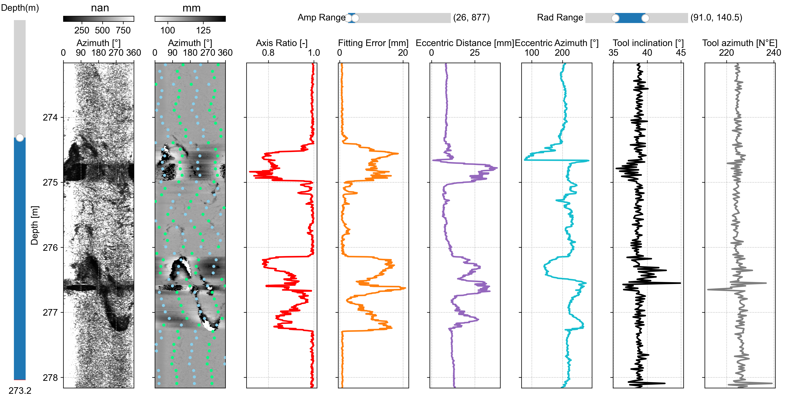
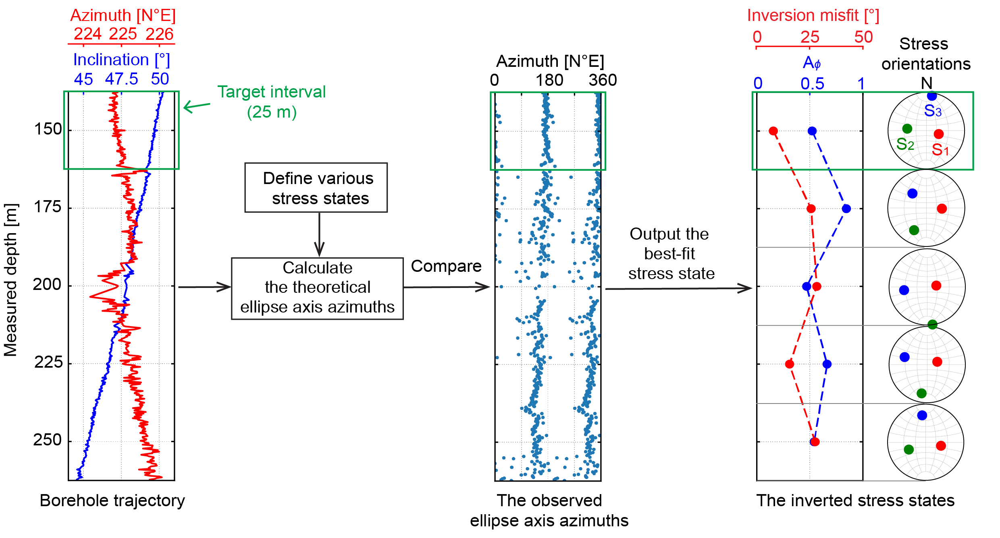

欢迎使用钻孔椭圆度项目
我是王光宇，本项目的主要贡献者和本文档的作者。
本说明文档将帮助您理解项目结构并快速上手。
钻孔椭圆度项目包含的代码可以从声波电视（ATV）测井数据计算钻孔（横截面）椭圆度，并根据钻孔椭圆度反演原位应力状态。
这些代码托管在中国科学技术大学地质力学小组的私有云服务器上，可通过 这里 访问。

项目结构
borehole_ellipticity.py # 从 ATV 旅行时间测井数据计算钻孔椭圆度
stressinv/ # 应力反演代码
stressinv_ellipticity.m # 从钻孔椭圆度反演应力状态（整个钻孔）
stressinv_ellipticity_depthwise.m # 从钻孔椭圆度反演应力状态（深度区间）
stress_vector_to_strike_dip.m
compute_aphi.m
euler_angle_to_stress_vector.m
RMSE_azimuth.m
EllipAxisOrien.m
process/ # 数据处理代码
borehole_ellipticity_outlier_filter.py # 过滤钻孔椭圆度异常值
borehole_ellipticity_resampling.py # 重采样钻孔椭圆度
concat_ellipticity_borehole_trajectory.py # 将钻孔轨迹添加到钻孔椭圆度作为新列
vis/ # 数据可视化代码
dispCSV.py # 显示 ATV 测井数据
dispCrossSection.py # 显示钻孔横截面
dispEllip.py # 显示钻孔椭圆度参数
data/ # 演示数据
ST1_20210305_DEV_ATV_up_main_TT_NM.csv # ATV 旅行时间测井数据
ST1_20210305_DEV_ATV_up_main_AMP_NM.csv # ATV 振幅测井数据
ST1_20210305_DEV_ATV_up_main_AZIMUTH.csv # ATV 测量的钻孔方位角
ST1_20210305_DEV_ATV_up_main_TILT.csv # ATV 测量的钻孔倾斜角
ST1_20210305_DEV_ATV_up_main_WNDTIME.csv # ATV 声波窗口旅行时间测井数据
borehole_ellipticity_outputs/
ellipticity_parameters.csv # 钻孔椭圆度参数
centralized_traveltime.csv # 中心化的 ATV 旅行时间
borehole_radius.csv
borehole_cross_section_azimuths.csv
functions.py # 函数库
requirement.txt # 环境构建依赖项
安装步骤
使用 conda 命令创建一个 Python 版本 ≥ 3.10 的环境：
conda create -n ellipticity python=3.10从 云服务器 下载项目到本地设备的一个文件夹中。
然后进入该文件夹，使用 pip 命令安装所有所需的包：
pip install -r requirements.txt最后，使用 conda 命令激活环境：
conda activate ellipticity现在你已完成所有设置。
计算钻孔椭圆度
要计算钻孔椭圆度，您需要打开以下 Python 脚本：
borehole_ellipticity.py
该脚本对从 ATV 旅行时间测井数据得出的钻孔横截面进行最小二乘椭圆拟合。
然后，编辑输入部分，该部分已经为演示进行了配置：
# ---------------------- 输入部分 ---------------------- #
# ATV 旅行时间测井数据的文件路径
fp_tt = './data/ST1_20210305_DEV_ATV_up_main_TT_NM.csv'
# ATV 工具声波窗口旅行时间（AWT）测井数据的文件路径
# 可选。如果没有可用数据，请输入 None
# AWT 是声波信号在 ATV 工具内的双向旅行时间
fp_wtt = './data/ST1_20210305_DEV_ATV_up_main_WNDTIME.csv'
# 当 AWT 测井数据不可用时，定义一个 AWT 值（与 ATV 旅行时间单位相同）
# 可选。如果 AWT 测井数据可用，请输入 None
wtt = None
# ATV 工具声波头的半径（单位：米）
rp = 0.019 # ALT-QL40-ABI 的参考值
# 钻孔流体的声速（单位：米/秒）
vf = 1480
# 将 ATV 旅行时间单位转换为毫秒的乘数
# 如果不需要，请输入 None
beta = None
# ATV 旅行时间测井数据的掩码文件路径，该掩码将部分排除旅行时间数据进行椭圆拟合
# 可选
fp_mask = None
# 输出目录
dir_out = './data/ST1_20210305_borehole_ellipticity_outputs'
# ----------------------------------------------------------- #
然后，运行脚本。
输出结果默认存储在 data/ST1_20210305_borehole_ellipticity_outputs 文件夹中。椭圆度参数保存在
ellipse_parameters.csv 文件中：
| Depth 深度 |
Azimuth_Major 长轴方位角 |
Azimuth_Minor 短轴方位角 |
Diameter_Major 长轴直径 |
Diameter_Minor 短轴直径 |
Center_x 中心 x 坐标 |
Center_y 中心 y 坐标 |
FittingError 拟合误差 |
|---|---|---|---|---|---|---|---|
| m (米) | deg (度) | deg (度) | mm (毫米) | mm (毫米) | mm (毫米) | mm (毫米) | mm (毫米) |
| 213.3626099 | 27.2013076 | 117.2013076 | 218.1290569 | 217.1751262 | -7.505987566 | -9.398823525 | 0.618327876 |
| 213.3667755 | 37.70659401 | 127.706594 | 218.1568949 | 217.2814357 | -7.510627093 | -9.334088801 | 0.594598325 |
| 213.3709412 | 37.70659401 | 127.706594 | 218.1568949 | 217.2814357 | -7.510627093 | -9.334088801 | 0.594598325 |
| ... | ... | ... | ... | ... | ... | ... | ... |
参数说明：
- Depth（深度）：沿钻孔测量的深度
- Azimuth_Major（长轴方位角）：拟合到钻孔横截面的椭圆长轴方位角
- Azimuth_Minor（短轴方位角）：拟合到钻孔横截面的椭圆短轴方位角
- Diameter_Major（长轴直径）：拟合到钻孔横截面的椭圆长轴直径
- Diameter_Minor（短轴直径）：拟合到钻孔横截面的椭圆短轴直径
- Center_x（中心 x 坐标）：ATV 工具中心相对于钻孔中心的 x 坐标
- Center_y（中心 y 坐标）：ATV 工具中心相对于钻孔中心的 y 坐标
- FittingError（拟合误差）：椭圆与钻孔横截面之间的拟合误差
一些副产品也会保存到输出文件夹中：
centralized_traveltime.csv：中心化的 ATV 旅行时间测井数据borehole_radius.csv：圆周方向的钻孔半径测井数据borehole_cross_section_azimuths.csv：校正后的 ATV 旅行时间测井数据方位角
显示钻孔椭圆度
有两种方法可以显示钻孔椭圆度：一种是在测量深度上显示椭圆度参数，另一种是在钻孔横截面上显示。
在测量深度上显示
打开 vis/dispEllip.py 脚本，并编辑输入部分，该部分已经为演示进行了配置：
# ---------------------- 输入部分 ---------------------- #
# 椭圆度参数的文件路径
ellip_fpath = '../data/borehole_ellipticity_outputs/ellipticity_parameters.csv'
# 使用以下 dz 间隔在测量深度上对椭圆度参数进行重采样
# 您可以输入 None 跳过重采样（米、英尺或其他长度单位，具体取决于 ATV 测井数据中的测量深度）
dz = 0.1
# ATV 振幅测井数据的文件路径
fp_atvAmp = '../data/ST1_20210305_DEV_ATV_up_main_AMP_NM.csv'
# 钻孔半径测井数据的文件路径
fp_atvRad = '../data/borehole_ellipticity_outputs/borehole_radius.csv'
# ATV 振幅测井数据的颜色映射
cmapAmp = 'gray'
# ATV 旅行时间测井数据的颜色映射
cmapRad = 'gray_r'
# ATV 测量的钻孔倾角的文件路径
fp_atvInc = '../data/ST1_20210305_DEV_ATV_up_main_TILT.csv'
# ATV 测量的钻孔方位角的文件路径
fp_atvAzi = '../data/ST1_20210305_DEV_ATV_up_main_AZIMUTH.csv'
# 显示长度（米、英尺或其他长度单位，具体取决于 ATV 测井数据中的测量深度）
lenZ = 5
# ----------------------------------------------------------- #
然后，运行脚本。
它将弹出两个窗口。
一个是包含椭圆度参数、ATV 测井数据以及 ATV 测量的钻孔倾角和方位角的多列图形：

另一个窗口包含两个玫瑰图，分别显示椭圆长轴和短轴方位角的方向：

钻孔椭圆度数据处理
钻孔椭圆度有三种基本处理方法：1. 基于椭圆拟合误差去除异常值，2. 沿测量深度重采样钻孔椭圆度，3. 拼接钻孔椭圆度和钻孔轨迹。
基于椭圆拟合误差去除异常值
打开 process/borehole_ellipticity_outlier_filter.py。然后，编辑输入部分，该部分已经为演示进行了配置：
# ---------------------- 输入部分 ---------------------- #
# 输入文件路径
fpin = "../data/ST1_20210305_borehole_ellipticity_outputs/ellipticity_parameters.csv"
# 处理的深度区间。输入 None 以使用最小值/最大值
zmin, zmax = 20, None
# 最大椭圆拟合误差（毫米）
max_error = 1
# 输出文件路径
fpout = "../data/ST1_20210305_borehole_ellipticity_outputs/ellipticity_parameters_outlier_filtered.csv"
# ----------------------------------------------------------- #
运行此脚本将删除椭圆拟合误差大于 1 毫米的椭圆参数。
您可以根据需要更改最大椭圆拟合误差。
输出椭圆度参数默认存储在
data/ST1_20210305_borehole_ellipticity_outputs/ellipticity_parameters_outlier_filtered.csv 中。
在测量深度上重采样椭圆参数
打开 process/borehole_ellipticity_resampling.py。然后，编辑输入部分，该部分已经为演示进行了配置：
# ---------------------- 输入部分 ---------------------- #
# 输入椭圆度参数的文件路径
fpin = "../data/ST1_20210305_borehole_ellipticity_outputs/ellipticity_parameters_outlier_filtered.csv"
# 重采样深度间隔（米）
dz = 0.025
# 子采样方法
# "average"：取每个椭圆度参数的平均值（方位角使用圆形平均值）
# "nearest"：取每个椭圆度参数的最近值
method = "average"
# 输出椭圆度参数的文件路径
fpout = "../data/ST1_20210305_borehole_ellipticity_outputs/ellipticity_parameters_outlier_filtered_dz0.025m.csv"
# ----------------------------------------------------------- #
运行此脚本将通过取参数的平均值将椭圆度参数在测量深度上重采样到 0.025 米的间隔。
您可以根据需要更改重采样深度间隔和方法。
输出椭圆度参数默认存储在
data/ST1_20210305_borehole_ellipticity_outputs/ellipticity_parameters_outlier_filtered_dz0.025m.csv
中。
拼接钻孔椭圆度和钻孔轨迹
对于从斜井的椭圆度参数进行应力反演，应力反演工作流程需要一个包含钻孔椭圆度和钻孔轨迹（倾角和方位角）的单个文件。
process/concat_ellipticity_borehole_trajectory.py 可以将钻孔椭圆度和钻孔轨迹拼接为一个 CSV 文件。
该脚本的输入部分如下所示：
# ---------------------- 输入部分 ---------------------- #
# 钻孔椭圆度参数的文件路径
felp = "../data/ST1_20210305_borehole_ellipticity_outputs/ellipticity_parameters_outlier_filtered_dz0.025m.csv"
# 钻孔倾角的文件路径
fbtl = "../data/ST1_20210305_DEV_ATV_up_main_TILT.csv"
# 钻孔方位角的文件路径
fbaz = "../data/ST1_20210305_DEV_ATV_up_main_AZIMUTH.csv"
# 输出文件路径
fout = '../data/ST1_20210305_borehole_ellipticity_outputs/ellipticity_parameters_outlier_filtered_dz0.025m_borehole_trajectory.csv'
# ----------------------------------------------------------- #
钻孔轨迹被插值到钻孔椭圆度参数的测量深度。
输出文件默认保存为
data/ST1_20210305_borehole_ellipticity_outputs/ellipticity_parameters_outlier_filtered_dz0.025m_borehole_trajectory.csv。
应力反演
可以根据原位应力和钻孔横截面变形之间的关系从钻孔椭圆度反演应力。更多详细信息可以在这篇论文中找到。
我们为斜井和垂直钻孔开发了不同的工作流程。
斜井应力反演
对于斜井，我们采用邻域算法在特定深度区间内搜索产生理论和观测椭圆轴方位角之间最低均方根误差（即反演拟合误差）的最佳应力状态：

Aφ 表示相对应力大小，定义如下：
(n+0.5)+(-1)n(φ-0.5)
其中 n 分别为正断层、走滑断层和逆断层体制分配 0、1 和 2。φ 是应力比，定义为：
φ = (S2-S3)/(S1-S3)
全局应力反演
stressinv/stressinv_ellipticity.m 是一个易于使用的 MATLAB 脚本，可以从整个测量深度区间的椭圆轴方位角进行全局应力反演。
输入部分如下所示：
%---------------------------输入部分----------------------------------
% 钻孔椭圆度文件路径
input_filename = "../data/ST1_20210305_borehole_ellipticity_outputs/ellipticity_parameters_outlier_filtered_dz0.025m_borehole_trajectory.csv";
% 应力反演输出文件路径
output_filename = "../data/ST1_20210305_stress_inversion_outputs/EllipseStressInv.mat";
%--------------------------------------------------------------------------
输出是一个 .mat 文件，存储多个参数：
- Rank_Top40：一个 40 × 6 数组，存储最后一次迭代的最佳 40 个应力状态，按反演拟合误差排序。第 1 到第 6 列的数据分别是欧拉角 a、b、c、应力比、S3 的相对大小和反演拟合误差
- Rank_Top40_all：一个 40 × 6 × 100 数组，存储每次迭代的最佳 40 个应力状态
- a_range：一个 N × 100 数组，存储每个应力参数组合的欧拉角 a。N 是组合的数量
- b_range：一个 N × 100 数组，存储每个应力参数组合的欧拉角 b
- c_range：一个 N × 100 数组，存储每个应力参数组合的欧拉角 c
- phi_range：一个 N × 100 数组，存储每个应力参数组合的应力比 φ
- S3_range：一个 N × 100 数组，存储每个应力参数组合的 S3 的相对大小
- RMSE_store：一个 N × 100 数组，存储每个应力参数组合的反演拟合误差
- para_cnt：应力参数组合的数量
局部应力反演
也可以使用 MATLAB 脚本 stressinv_ellipticity_depthwise.m 在沿测量深度的分段区间内进行局部应力反演。
输入部分如下所示：
%---------------------------输入部分----------------------------------
% 钻孔椭圆度文件路径
input_filename = "../data/ST1_20210305_borehole_ellipticity_outputs/ellipticity_parameters_outlier_filtered_dz0.025m_borehole_trajectory.csv";
% 应力反演输出文件路径
output_filename = "../data/ST1_20210305_stress_inversion_outputs/EllipseStressInv_win25m.mat";
% 深度间隔（米）
dz = 25;
% 如果窗口中的 NaN 值比例高于此阈值，将不执行反演
nan_thres = 0.5;
%--------------------------------------------------------------------------
输出保存在一个结构数组中作为 .mat 文件。
结构数组中将有多个结构。每个结构包含一个测量深度区间内的以下参数：
- zmid：区间的中心深度
- zmin：区间的最小深度
- zmax：区间的最大深度
- Rank_Top40：一个 40 × 6 数组，存储最后一次迭代的最佳 40 个应力状态，按反演拟合误差排序。第 1 到第 6 列的数据分别是欧拉角 a、b、c、应力比、S3 的相对大小和反演拟合误差
- Rank_Top40_all：一个 40 × 6 × 100 数组，存储每次迭代的最佳 40 个应力状态
- a_range：一个 N × 100 数组，存储每个应力参数组合的欧拉角 a。N 是组合的数量
- b_range：一个 N × 100 数组，存储每个应力参数组合的欧拉角 b
- c_range：一个 N × 100 数组，存储每个应力参数组合的欧拉角 c
- phi_range：一个 N × 100 数组，存储每个应力参数组合的应力比 φ
- S3_range：一个 N × 100 数组，存储每个应力参数组合的 S3 的相对大小
- RMSE_store：一个 N × 100 数组，存储每个应力参数组合的反演拟合误差
- para_cnt：应力参数组合的数量
📝 注意事项：
- 请确保您的 Python 版本 ≥ 3.10
- MATLAB 脚本需要 MATLAB 环境才能运行
- 处理大型数据集时可能需要较长时间，请耐心等待
- 建议先使用示例数据熟悉工作流程
⚠️ 联系方式：
如果您对本项目有任何问题或建议，请随时通过电子邮件联系王光宇：wangguangyu@mail.ustc.edu.cn
© 2025 中国科学技术大学地质力学小组 | Borehole Ellipticity Project V1.0